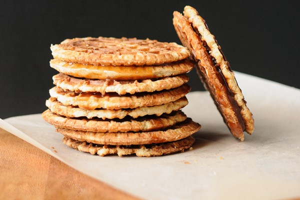

Scrumptious Caramel Waffle Sandwiches

Description
These caramel waffle sandwiches have a sweet, delicious flavor. There is a mix of crunchiness from the wafer cookie, along with buttery creaminess from the caramel filling. These charming, little sandwiches also make great gifts. (Note: This recipe makes 12 cookies.)
Ingredients
- 4 Tbsp unsalted butter
- 1/2 cup packed light brown sugar
- 1/4 tsp ground cinnamon
- 1/3 cup heavy cream
- 24 oval Belgian butter waffle cookies
- A medium saucepan
- A bowl
- A whisk or spoon
Directions
- Melt the butter in your medium saucepan over medium-high heat.
- Add the brown sugar and cinnamon and cook, stirring with your whisk or spoon until the sugar dissolves.
- Bring mixture to a boil and stir in the cream. Boil for 2 minutes (the mixture will bubble up into an even light-colored foam).
- Transfer the mixture to your bowl.
- Refrigerate until it's slightly cooled and spreadable (about 30 minutes).
- Spread half of the cookies with 2 tsp each of the cooled caramel.
- Sandwich each with another cookie.
- Enjoy your delicious caramel waffle sandwiches, or give them away as a tasty treat!